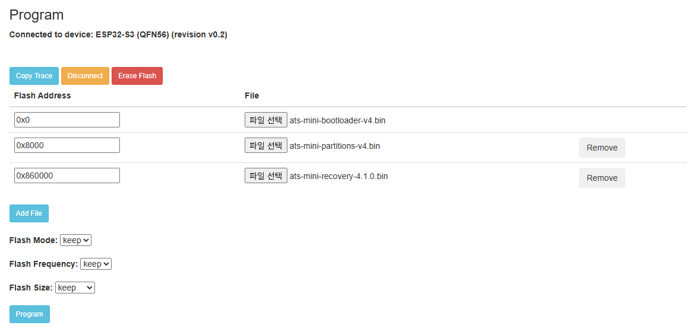

| | |
|---|
ats-mini-bootloader-v4.bin | 0x0 | |
ats-mini-partitions-v4.bin | 0x8000 | |
ats-mini-recovery-4.1.0.bin | 0x860000 | |
app0.bin | 0x10000 | |
app1.bin | 0x390000 | |
| |
|---|
ats-mini-bootloader-v4.bin | 0x0 |
ats-mini-partitions-v4.bin | 0x8000 |
ats-mini-recovery-4.1.0.bin | 0x860000 |

uvx --from esptool esptool.py --chip esp32s3 --port COM7 --baud 460800 \
--before default-reset --after hard-reset \
write-flash 0x860000 ats-mini-recovery-4.1.0.bin
uvx --from esptool esptool.py --chip esp32s3 --port COM7 --baud 460800 \
write-flash 0x0 ats-mini-bootloader-v4.bin \
0x8000 ats-mini-partitions-v4.bin \
0x860000 ats-mini-recovery-4.1.0.bin